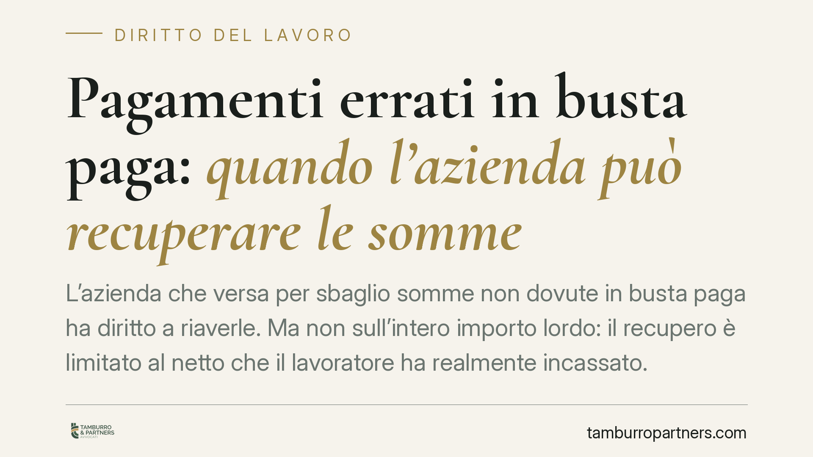

Pagamenti errati in busta paga: quando l'azienda può recuperare le somme
L'azienda che versa per sbaglio somme non dovute in busta paga ha diritto a riaverle. Ma non sull'intero importo lordo: il recupero è limitato al netto che il lavoratore ha realmente incassato. La buona fede del dipendente non cancella il debito, incide solo su interessi e frutti. Nel pubblico impiego il recupero è addirittura obbligatorio.

Il caso
Un errore nel calcolo della retribuzione, un emolumento liquidato due volte, una voce accessoria corrisposta senza titolo. Capita, e la domanda che il datore si pone è semplice: posso riprendermi quei soldi?
La risposta è sì, ma con un limite preciso che spesso viene frainteso. Non si recupera tutto ciò che compare nel cedolino, bensì soltanto quanto il lavoratore ha effettivamente ricevuto.
Inquadramento normativo
Lo strumento è l'azione di ripetizione dell'indebito prevista dall'art. 2033 del codice civile: chi paga ciò che non deve ha diritto alla restituzione di quanto versato. La norma si applica anche al rapporto di lavoro quando il datore eroga somme per errore.
Il punto decisivo riguarda la misura del rimborso. La busta paga espone un importo lordo, comprensivo delle ritenute fiscali e contributive che il datore versa all'Erario e agli enti previdenziali. Ma quelle ritenute non sono mai entrate nelle tasche del dipendente. La Corte di Cassazione ha chiarito che l'obbligo restitutorio del lavoratore si commisura al netto effettivamente percepito, non al lordo. Per le somme versate all'Amministrazione finanziaria il datore deve attivare gli autonomi strumenti di recupero fiscale, ad esempio il meccanismo dell'art. 38 del D.P.R. 602/1973.
Quanto alla buona fede del lavoratore: essa non estingue il debito. Chi incassa in buona fede resta comunque tenuto a restituire la sorte capitale. La buona fede rileva solo sugli accessori: gli interessi e i frutti decorrono dalla domanda e non dal giorno del pagamento (art. 2033 cod. civ.). Il termine di prescrizione dell'azione è quello ordinario decennale (art. 2946 cod. civ.).
Implicazioni pratiche
Per il datore di lavoro privato significa che il recupero non può tradursi in una trattenuta automatica e integrale del lordo. L'importo esigibile è il netto, e la modalità di rientro va gestita con attenzione: trattenute eccessive sulle retribuzioni successive possono esporre a contestazioni, perché la busta paga ha anche natura alimentare.
Per il lavoratore la tutela sta nel non doversi far carico di imposte e contributi che non ha mai incassato. Chi riceve una richiesta di restituzione ha diritto a verificare che il conteggio parta dal netto e non dal lordo esposto in cedolino.
Nel pubblico impiego il quadro cambia. L'Amministrazione non ha una semplice facoltà, ma un vero e proprio obbligo di recuperare le somme indebitamente erogate: sono denaro pubblico. Il recupero resta però soggetto al principio di sostenibilità: va previsto un piano di rientro rateizzato che non comprometta il minimo vitale del dipendente.
Cosa fare in concreto
- Verifica il conteggio. Se sei il destinatario di una richiesta di restituzione, controlla che l'importo richiesto corrisponda al netto incassato e non al lordo del cedolino.
- Datore: calcola il netto prima di procedere. Separa la sorte capitale da ritenute fiscali e contributive, da recuperare con gli strumenti propri verso Erario ed enti.
- Concorda un piano di rientro. Evita trattenute integrali in un'unica soluzione: proponi o richiedi una rateizzazione proporzionata alla retribuzione.
- Controlla la prescrizione. L'azione si prescrive in dieci anni; verifica la data del pagamento indebito per valutare se la pretesa è ancora esigibile.
- Documenta tutto per iscritto. Comunica l'errore, l'importo e le modalità di recupero con atto formale, così da fissare il momento da cui decorrono interessi e frutti.
La materia è tecnica e ogni cedolino ha le sue particolarità. Consigliamo di far analizzare il conteggio prima di accettare o avviare un recupero, perché la differenza tra lordo e netto può incidere in modo significativo sull'importo realmente dovuto.
---
*Contributo informativo a cura di Tamburro & Partners - Avv. Giuseppe Tamburro. Non costituisce parere legale.*
Ogni storia di lavoro ha i suoi tempi.
Se gestisci HR e vuoi un confronto su contenzioso, ispezioni o licenziamenti, scrivi allo studio. Ti rispondiamo entro un giorno lavorativo.